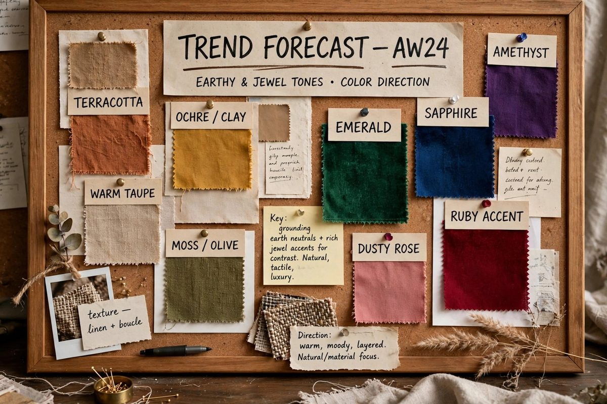
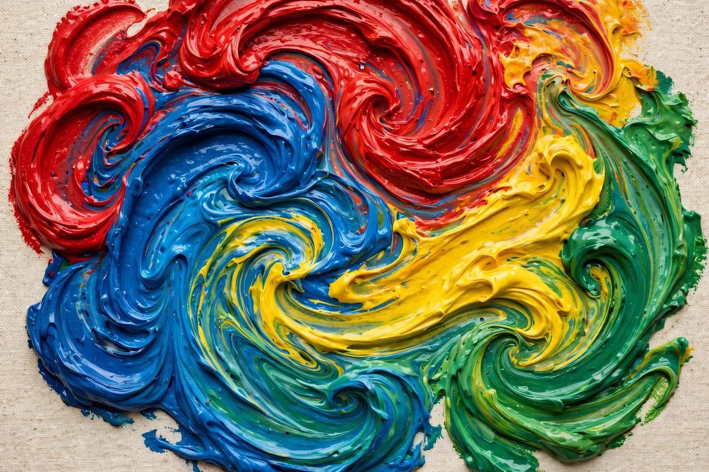

Color Trends for 2026

What is changing in color this year: earthy naturals, deep jewel tones, digital brights, and how to use trends wisely.
Earthy naturals lead the year
The strongest trend of 2026 is earthy, grounded color: warm clay, olive, mushroom, sand and deep forest green. After years of bright digital palettes, brands are reaching for colors that feel calm, honest and connected to the natural world. These shades work beautifully for food, home, wellness and sustainable products. Pair them with cream rather than pure white for a softer, warmer feel.
Deep jewel tones for premium brands
Alongside the naturals, deep jewel tones are everywhere: sapphire, emerald, ruby and amethyst used as rich, saturated backgrounds with cream or gold text. They signal luxury without the coldness of black, and they photograph well. Use them in large blocks, such as a hero section or packaging, and keep the rest of the design quiet so the jewel tone can carry the drama.
Digital brights stay, but smaller
Electric violet, vivid lime and hot coral have not disappeared; they have shrunk. Instead of flooding a page, they now appear as small, precise accents: a button, a highlight, an underline. This is a good use of bright color, because it draws the eye exactly where the designer wants it. If you love a loud color, use it at five percent of the page and it will feel intentional rather than overwhelming.
Warm neutrals replace cold greys
Cool grey has dominated interfaces for a decade, and 2026 is the year warm neutrals take over: greige, warm stone, soft taupe and cream. They feel more human and pair better with the earthy palette. If your site still uses cold blue-grey, try warming the grey by a few degrees toward beige; the change is subtle, but the whole design feels friendlier.
How to use trends without dating your brand
Trends are useful for campaigns, packaging and seasonal work, but dangerous for a logo or a core brand color. Let trends live in supporting colors and illustrations, and keep your main brand color timeless. Revisit your palette once a year, change one supporting color if it feels dated, and leave the rest alone. A brand that chases every trend looks restless; a brand that nods to trends looks alive.
Trends in packaging and retail
Color trends show up first in packaging and retail, where a new shade can make a product stand out on a shelf. In 2026, expect to see earthy naturals on food packaging, jewel tones on premium goods, and warm neutrals on everyday products. Retail buyers watch these trends closely, because a product in a fashionable color sells faster than the same product in a dated one. If you design packaging, visit a shop twice a year and photograph the shelves; the colors you see are the trend, before any forecast tells you about it.
Where to watch trends
The best places to watch color trends are not trend reports but the real world: shop shelves, street fashion, film posters and social media feeds. Spend an hour a month noting the colors you see repeated, and you will spot shifts months before they appear in forecasts. Your own eyes, trained by attention, are the most reliable trend tool you own.
Frequently asked questions
Should I redesign my site for 2026 trends?
Only if your current palette feels dated or off-brand. Small updates to supporting colors are usually enough.
What is the color of the year?
Different forecasters name different colors each year, and they often disagree. Treat these announcements as inspiration, not rules.
Do trends matter for small businesses?
Less than clarity and consistency. A clear, readable palette beats a trendy one every time.
How fast do color trends change?
Major trends last two to three years, with small shifts each season. Packaging and fashion move fastest; brand identities move slowest.
Try the tools
HEX to RGB Converter
Convert a HEX color code into its red, green and blue values, instantly and in your browser.
RGB to HEX Converter
Convert red, green and blue values (0-255) into a HEX color code you can use in CSS.
Palette Generator
Pick a base color and generate complementary, analogous, triadic and monochromatic palettes.
Contrast Checker
Check the WCAG contrast ratio between a text color and a background color, with AA and AAA verdicts.
More guides
 How to Pick Colors for a Website
How to Pick Colors for a Website HEX vs RGB vs HSL Explained
HEX vs RGB vs HSL Explained Building a Color Palette from Scratch
Building a Color Palette from Scratch Color Contrast and Accessibility Guide
Color Contrast and Accessibility Guide
Color Psychology in Design Choosing Brand Colors
Choosing Brand Colors Warm vs Cool Colors
Warm vs Cool Colors Color Harmony Rules for Beginners
Color Harmony Rules for Beginners Using a Color Picker Tool Effectively
Using a Color Picker Tool Effectively Monochromatic Color Schemes
Monochromatic Color Schemes Complementary Colors: A Complete Guide
Complementary Colors: A Complete Guide Analogous Colors in Design
Analogous Colors in Design Triadic Color Schemes Explained
Triadic Color Schemes Explained Picking Colors for Dark Mode
Picking Colors for Dark Mode Color-Blind Friendly Design
Color-Blind Friendly Design Gradient Colors: A Practical Guide
Gradient Colors: A Practical Guide Seasonal Color Palettes
Seasonal Color Palettes Color Mistakes Beginners Make
Color Mistakes Beginners Make Naming Colors in CSS
Naming Colors in CSS